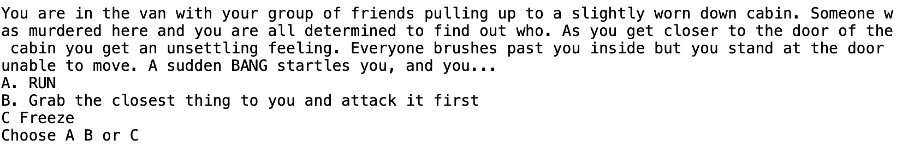

Professional Summary
Skilled in ServiceNow configuration, integration, and automation, ensuring efficient and reliable IT service management. Strong focus on team collaboration, adaptable to changing needs, and consistently delivering impactful results. Efficient with problem-solving abilities, effective communication, and results-driven approach.
Education
- Illinois Institute of Technology, Bachelor of Science, Imformation Technology Management, 2027
Skills
- Process Automation
- ServiceNow Development
- Workflow Design
- Project Planning
- Critical Thinking
Work Experience
- West Monroe, Chicago, IL
- Leveraged expertise in configuring applications such as Asset Management, Change Management, and Service Catalog to ensure seamless integration with existing organizational processes
- Transferred ServiceNow Workflows to Flows in order to optimize employee performance
- Tested platform after company-wide update to ensure services were running optimally
- Maintained up-to-date knowledge of ServiceNow platform enhancements and applied them to improve business processes.
- West Monroe, Chicago, IL
- Designed user-friendly forms and interfaces within the platform, improving user experience and overall efficiency.
- Gained valuable experience working within the tech industry, applying learned concepts directly into relevant work situations.
- Enhanced system performance by optimizing ServiceNow configurations and customizations.
- Improved platform reliability with thorough testing and analysis of defects.
- Created an automated testing framework, improving test coverage and efficiency across multiple projects.
- Civic Studios, Chicago, IL
- Conducted interviews with industry professionals for various projects, gathering valuable insights and enhancing project outcomes
- Assisted in producing high-quality audio and video recordings through proper equipment setup, sound checks, and problem-solving during sessions.
- Directed and coordinated various elements of a production, facilitating seamless collaboration and efficient workflow
- Managed the editing of video and audio for diverse projects, including podcasts and documentaries, ensuring high-quality and engaging outputs.
- Participated in marketing strategies for a non-profit organization
- Murder Mystery Word Game
- I originally started this game as a group project during my summer training. A part of my internship acquisition was being able to code in Python. I loved the language so much, that I continued to edit the game even after we moved on. This is a simple game with A, B, or C letter choices.
- Here is the link, check it out!
- 